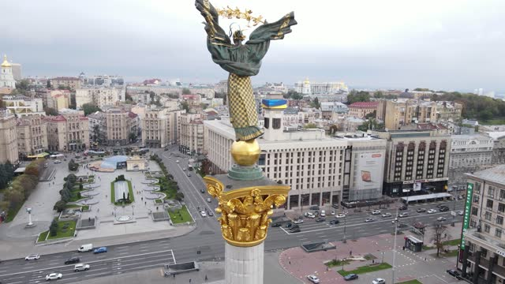
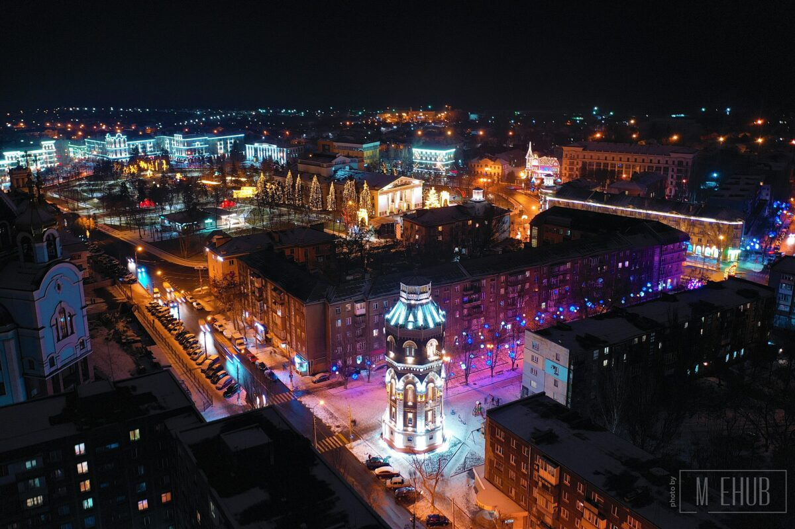
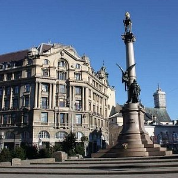
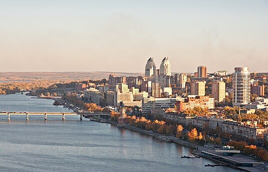

Kiev
Kyiv (also spelled Kiev)[a]is the capital and most populous city of Ukraine. It is in north-central Ukraine along the Dnieper River. As of 1 January 2022, its population was 2,952,301,[2] making Kyiv the seventh-most populous city in Europe.[11] Kyiv is an important industrial, scientific, educational, and cultural center in Eastern Europe. It is home to many high-tech industries, higher education institutions, and historical landmarks. The city has an extensive system of public transport and infrastructure, including the Kyiv Metro.
WikiLink

Mariupol
Historically, the city of Mariupol was a centre for trade and manufacturing, and played a key role in the development of higher education and many businesses and also served as a coastal resort on the Sea of Azov. In 1948, Mariupol was renamed Zhdanov after Andrei Zhdanov, a native of the city who had become a high-ranking official of the Communist Party of the Soviet Union and a close ally to Joseph Stalin. The name was part of a larger effort to rename cities after high-ranking political figures in the Soviet Union. The historic name was restored in 1989.

Lviv
Lviv (/ləˈviːv/, /ləˈviːf/ lə-VEEV, lə-VEEF; Ukrainian: Львів [lʲwiu̯] ⓘ; see below for other names) is the largest city in western Ukraine, and the sixth-largest in Ukraine,Link with a population of 717,273 (2022 estimate).[5] It serves as the administrative centre of Lviv Oblast and Lviv Raion,[6] and is one of the main cultural centres of Ukraine. Lviv also hosts the administration of Lviv urban hromada. It was named in honour of Leo, the eldest son of Daniel, King of Ruthenia.

Dnipropetrovsk
Dnipro, formerly Dnipropetrovsk (1926–2016), is Ukraine's fourth-largest city, with about one million inhabitants.[4][5][6][7] It is located in the eastern part of Ukraine, 391 km (243 mi)[8] southeast of the Ukrainian capital Kyiv on the Dnipro River, after which its name is derived. Dnipro is the administrative centre of Dnipropetrovsk Oblast. It hosts the administration of Dnipro urban hromada.[9] Dnipro has a population of 968,502 (2022 estimate).
The end